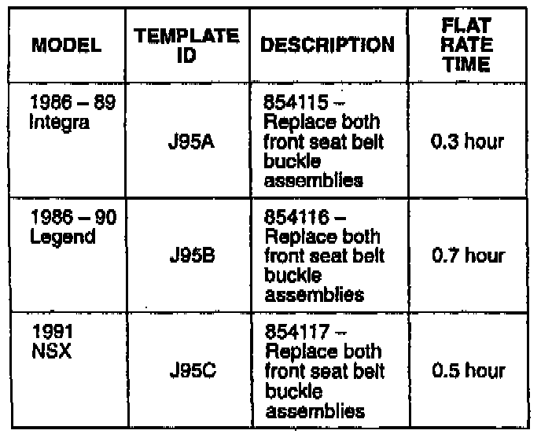
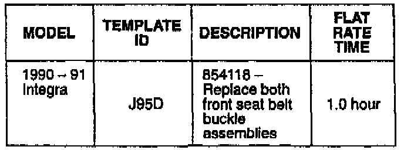
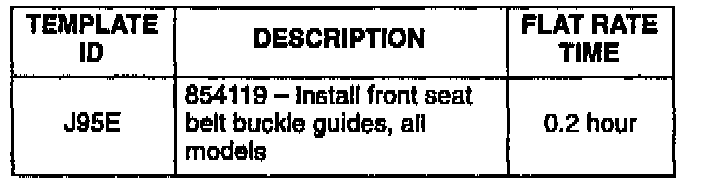

Recall - Front Seat Belt Buckle: Overview
July 13, 1995BULLETIN NO.
95-011
YEAR
1986-91
1986-90
1991
MODEL
INTEGRA
LEGEND
NSX
VIN APPLICATION
See VEHICLES
AFFECTED
Front Seat Belt Buckle Campaign
(Supersedes 95-011, dated May 22, 1995)
BACKGROUND
The plastic button on Takata front seat belt buckles may break. Pieces from the broken button could fall into the seat belt buckle, causing it to not latch or not unlatch.
VEHICLES AFFECTED
Integra:
1986-90 - All
1991
3-door - Thru VIN JHMDA9...MS026676
4-door - Thru VIN JHMDB1...MS009150
Legend:
1986-90 4-door - All
1987-90 Coupe - All
NSX:
1991 - Thru VIN JHMNA1. . .MT001507
TOOL INFORMATION
Buckle inspection mirror:
Call American Honda Special Tools
at (800) 346-6327
PARTS INFORMATION
Seat belt buckle assembly:
See Parts Information Bulletin B95-0011
Front seat belt buckle guide kit A:
Black - P/N 06850-SH2-305ZA
Brown - P/N 06850-SH2-305ZB
Ivory - P/N 06850-SH2-305ZC
Front seat belt buckle guide kit B:
Black - P/N 06850-SH1-305ZA
Brown - P/N 06850-SH1-305ZB
Ivory - P/N 06850-SH1-305ZC
Front seat belt buckle guide kit C:
Black - P/N 06850-SE3-305ZA
Brown - P/N 06850-SE3-305ZB
See Parts Information Bulletin B95-0010 for information on matching guide kits to interior colors.
Guide Kit Application - Legend
Year and Model Kit
1986-87 4-door C
1988-90 4-door A
1987 2-door C
1988-90 2-door A
Guide Kit Application - Integra
Year and Model Kit
1986-87 All C
1988-89 All A
1990-91 All B
Guide Kit Application - NSX
Year Kit
1991 A

WARRANTY CLAIM INFORMATION
Buckle Replacement - All 3-point active
(non-motorized) seat belts
Failed P/N: Integra Legend - 04813-999-999
NSX - 04816-SL0-A02ZA
Defect code: 712
Contention code: J95

Buckle Replacement - All 2-point passive (motorized) seat belts
Failed P/N: 04849-999-999
Defect code: 712
Contention code: J95

Buckle Guide Installation - All Models
Failed part: P/N 06850-999-999
Defect code: 712
Contention code: J95